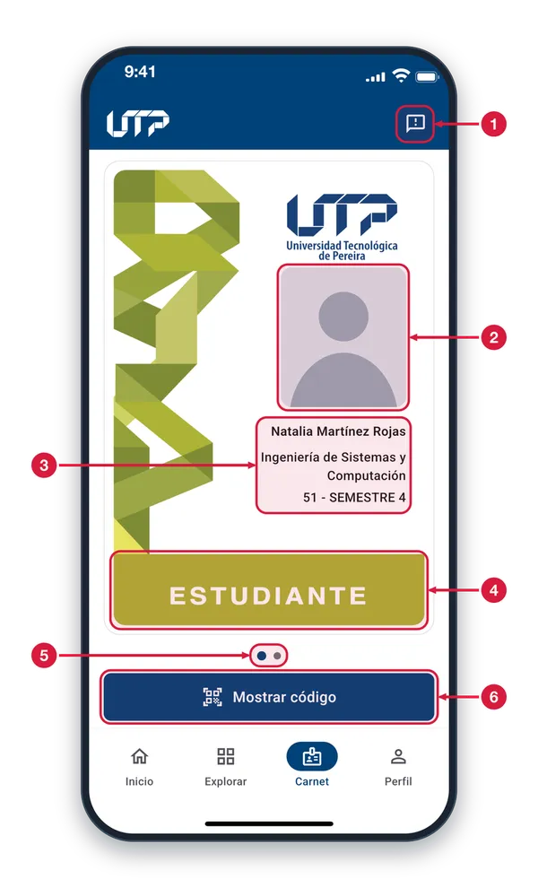
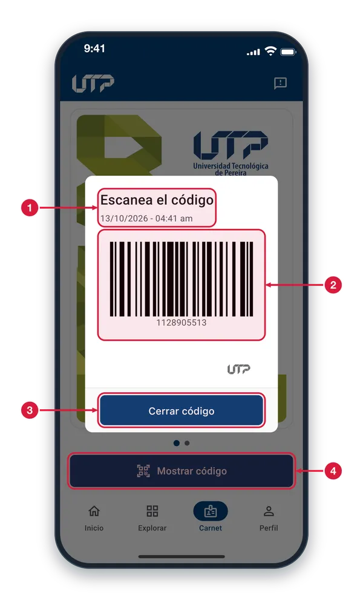

Tu identificación universitaria siempre contigo. El carnet digital reemplaza la tarjeta física: muestra tu nombre, programa y rol dentro de la universidad.
El módulo de Carnet cuenta con:
Carnet digital con foto, nombre y programa académico
Diseño diferenciado por rol: estudiante, docente, administrativo
Carrusel deslizable si tienes múltiples roles
Código de barras escaneable (Code 128) para identificación
Funciona sin conexión una vez cargado
Solo podrás ver y hacer uso del módulo CARNET cuando te loguees en la aplicación
CARNET DIGITAL
Carné digital1 de 2
Tu carné de la universidad en el celular, con tu foto y tus datos. Está en la pestaña Carnet de la barra de abajo.

Sugerencias Abre «Sugerencias», donde calificas la app y dejas un comentario para el equipo.
Tu foto Es tu foto de perfil. Si aún no tienes una, aparece una imagen genérica.
Nombre y programa Tu nombre, el programa que cursas y, en la última línea, tu semestre.
Tipo de carné La franja inferior dice qué tipo de carné es; aquí, ESTUDIANTE. Cada tipo de usuario tiene su propio diseño y color.
Puntos del carrusel Si tienes más de un carné, los puntos indican cuántos hay y cuál estás viendo. Desliza el carné hacia un lado para pasar al otro.
Mostrar código Abre una ventana con el código de barras de tu carné para que lo escaneen. Si tu carné está inactivo, en su lugar verás un aviso.
Código de tu carné2 de 2
Al tocar «Mostrar código» se abre esta ventana con el código de barras de tu carné, listo para escanear.

Fecha y hora El título te pide escanear el código. Debajo aparecen la fecha y la hora en que abriste la ventana.
Código de barras Es el código de tu carné, con su número debajo. Acerca la pantalla al lector de quien deba escanearlo.
Cerrar código Cierra la ventana y vuelves a tu carné. También puedes cerrarla tocando fuera de ella.
Mostrar código (botón) Es el botón que abre esta ventana. Cada vez que lo tocas, la ventana muestra la fecha y la hora de ese momento.